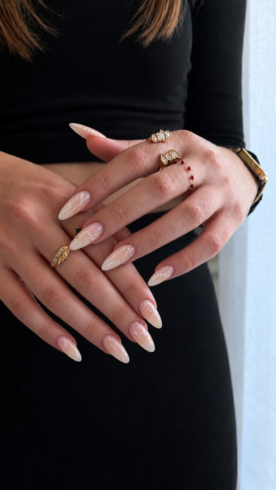
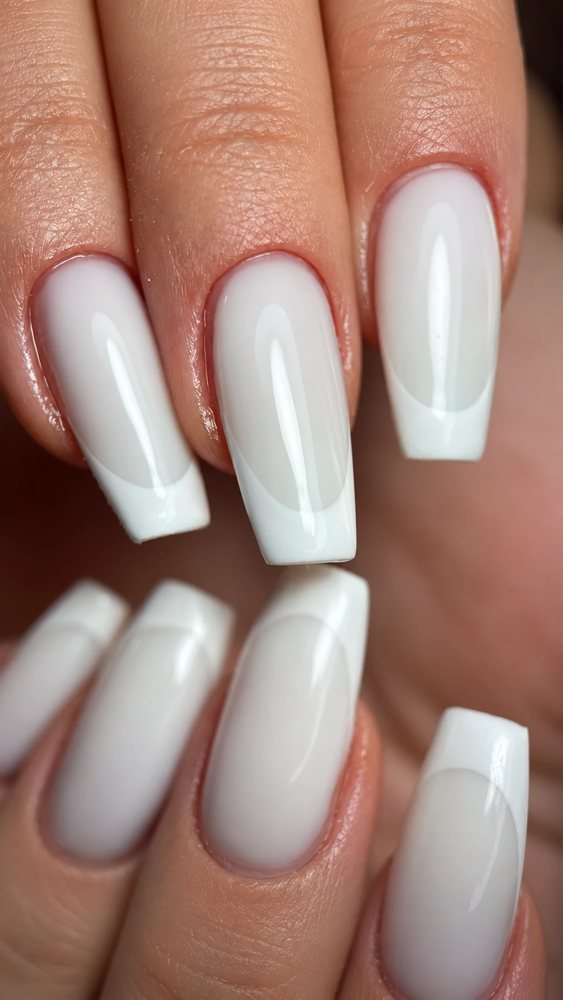
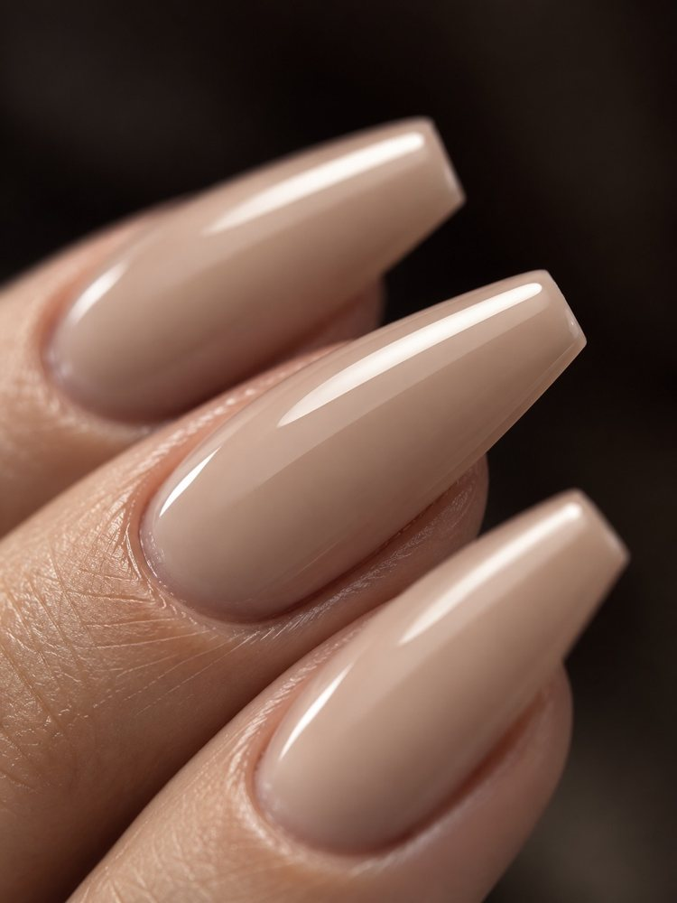
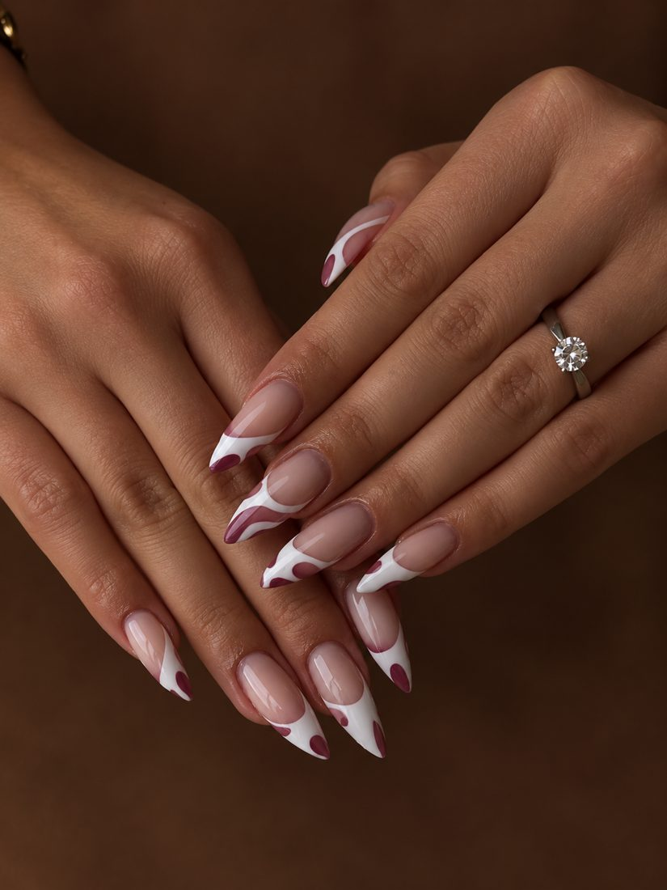

Le menu
Mes prestations

Pose américaine2 choix · 1 h 30
dès 20 €

Gainage3 choix · 1 h
dès 20 €

Semi renforcé2 choix · 45 min
dès 15 €

Et aussi1 choix
dès 120 €



67 avis vérifiés
« Marie est géniale ! De son accueil à sa prestation tout est parfait. Le lieu est propre. »
PAOLA G. · GOOGLE« Un travail soigné, elle est aux petits soins. Ce ne sera pas la dernière fois. »
CATHERINE L. · GOOGLE« Très bon moment dans son petit cocon, on se sent tout de suite à l'aise. »
MÉLINDA N. · GOOGLE
J'ai 28 ans, je suis nail artist indépendante à Porto-Vecchio, et un peu baddie sur les bords. Chez moi, on prend le temps.
Marie ✦